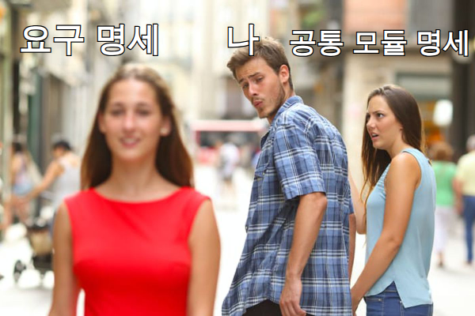

D010 · 감성공학 1·2·3류와 설계 모델링 — A2 마무리, A3 시작
A2 A3 오늘로 A2(화면 설계)를 닫고 A3(애플리케이션 설계)를 열어요. 둘 다 시험에서 묻는 건 좁아요 — 감성공학은 1·2·3류 키워드, 설계 모델링은 상위/하위 설계와 공통 모듈 명세 원칙 “정명완일추”가 사실상 전부예요.
- 감성공학의 정의(사람의 감성을 측정·분석해 제품·UI 설계에 반영하는 인간 중심 공학)와 UI 적용 예를 설명한다
- 감성공학 1·2·3류를 키워드로 구별한다 — 1류 형용사·감성 어휘 / 2류 개인·심리·문화 / 3류 공학 측정·수학 모델·생리
- A2 세세항목 5개(UI 표준·UI 지침·스토리보드·감성공학·UI 설계 도구)를 한 장 요약으로 정리한다
- 설계 모델링(무엇을 → 어떻게, 구조/행위 모델링, 상위 설계 = 아키텍처·예비 / 하위 설계 = 모듈·상세)을 구별한다 — 자료구조 설계의 소속은 자료마다 다르다는 것도 안다
- 공통 모듈 명세 원칙 정확성·명확성·완전성·일관성·추적성을 정의로 구별한다
1. A2 지도 — 마지막 칸
2. 감성공학이란
현업 감각으로는 “만족도 설문·A/B 테스트·사용성 테스트로 느낌을 숫자로 바꿔 디자인 결정에 쓰는 것”이에요. 목적은 사용자가 편리·안전·쾌적하게 쓰도록 하는 것, UI에서는 HCI 설계에 감성을 반영하는 것이에요. 이름은 1988년 국제 인간공학 학회에서 붙었다고 소개돼요.
3. 감성공학 1·2·3류 — 말 · 마음 · 몸
시험에 나오는 건 거의 이 분류예요. 감성을 무엇으로 붙잡느냐가 다릅니다. 1류는 사람이 말로 표현한 감성, 2류는 그 사람 자체(개인·문화), 3류는 기계로 잰 몸의 반응이에요. 1류 → 3류로 갈수록 주관에서 객관으로 옮겨 가요.
| 분류 | 감성을 잡는 방법 | 강조 특성 | 시험 키워드 |
|---|---|---|---|
| 1류 | 감성 어휘(형용사)로 제품 이미지를 조사해 디자인 요소와 연결 (의미 미분법 등) | 감성 이미지 | 형용사 · 감성 어휘 · 이미지 |
| 2류 | 개인의 생활방식·특성으로 이미지를 구체화, 문화적 감성 일부 반영 | 심리적 | 개인 · 문화 · 심리 |
| 3류 | 감성 어휘 대신 공학적으로 감각을 계측 → 수학적 모델, 물리적 특성과 객관 지표의 연관 분석 | 생리적 | 측정 · 정량 · 수학 모델 · 생리 |
※ 이 1·2·3류 정리는 여러 수험 자료가 일치하는 기준이에요(분류를 제안한 연구자로 나가마치 미츠오가 소개되기도 해요). 일부 요약은 4류까지 두거나 1류를 “인터뷰 같은 질적 자료”로 설명하는 등 다르게 적어요. 시험에서는 형용사 → 1류, 심리·문화 → 2류, 측정·생리 → 3류로 고르면 돼요.
감성공학을 이루는 요소 기술은 세 단계로 소개돼요.
4. A2 한 장 요약 — 화면 설계 끝
| 세세항목 | 한 줄 정의 | 시험 키워드 |
|---|---|---|
| UI 표준 | 전체 시스템에 공통으로 적용하는 화면 구성·이동 규약 | 전체 공통 · 규약 |
| UI 지침 | UI 개발 중 지켜야 할 세부 조건·원칙 (사용자 중심·일관성·가시성·접근성·오류 안내) | 세부 조건 · 함께 본 설계 4원칙 직유학유 |
| 스토리보드 | 화면 + 번호별 Description, 정책·기능·DB 연동까지 담은 최종 참고 문서 | 최종 참고 · Description |
| 감성공학 (오늘) | 감성을 측정·분석해 설계에 반영하는 인간 중심 공학 | 1류 말 · 2류 마음 · 3류 몸 |
| UI 설계 도구 | 와이어프레임·목업·스토리보드·프로토타입·유스케이스 | 목업 정적 · 프로토타입 동적 |
5. A3 지도 — 이번 주 로드맵
A3 애플리케이션 설계는 세부항목 2개, 세세항목 8개예요. 오늘은 첫 칸 설계 모델링이고, 나머지는 이번 주에 하루씩 채워요.
6. 설계 모델링 — “무엇을”에서 “어떻게”로
A1에서 한 분석 모델링(DFD·OMT 등)은 무엇을 만들지 이해하는 그림이었어요. 설계 모델링은 그 요구를 어떻게 구현할지 정하는 청사진 — 소프트웨어의 내부 기능·구조·동적 행위를 모델로 표현해 분석·검증하는 작업이에요.
설계 모델링에서 지킬 원칙으로 네 가지가 소개돼요.
무엇을 모델링하느냐에 따라 두 가지로 나눠요. A1에서 본 UML 구조(정적) / 행위(동적) 다이어그램 구분과 같은 생각이에요.
7. 상위 설계 vs 하위 설계
설계는 크게 두 층이에요. 건물로 치면 배치도·평면도(상위)와 방별 배선·배관 상세도(하위)예요.
| 자료 계열 | 상위 설계 | 하위 설계 |
|---|---|---|
| A | 아키텍처 · 데이터 · 인터페이스 · UI | 모듈 · 자료구조 · 알고리즘 |
| B | 아키텍처 · 인터페이스 · 자료구조 · 프로시저 · 협약에 의한 설계 | 모듈 설계만 |
협약에 의한 설계(Design by Contract)는 현업의 assert·계약 프로그래밍과 같은 생각이에요. 컴포넌트를 쓸 때 지켜야 할 조건을 세 가지로 명시해요.
※ 설계 원리(분할과 정복·추상화·단계적 분해·모듈화·정보은닉)와 상향식/하향식 설계는 내일 D011 아키텍처에서 본문으로 다뤄요.
8. 공통 모듈과 명세 원칙 — 정명완일추
공통 모듈은 여러 기능·프로그램이 함께 쓰는, 독립적으로 컴파일·재사용할 수 있는 모듈이에요. 날짜 변환, 코드 값 변환, 금액 포맷 유틸 같은 것들이죠. 여러 곳에서 쓰는 만큼 명세를 엄격하게 써야 하고, 그 기준이 다섯 원칙이에요.
| 원칙 | 뜻 | 어기면 이런 모습 |
|---|---|---|
| 정확성 | 실제 구현 시 필요한 기능인지 알 수 있도록 정확히 작성 | 필요 없는 기능까지 공통 모듈에 넣어 둠 |
| 명확성 | 해당 기능을 이해할 때 한 가지로 해석되도록 작성 | “적절히 반올림한다” — 사람마다 다르게 읽음 |
| 완전성 | 시스템 구현에 필요한 것을 빠짐없이 기술 | 빈 값·음수 입력 처리 규칙이 없음 |
| 일관성 | 공통 기능들 사이에 상호 충돌이 없도록 작성 | 날짜 모듈은 KST, 시간 모듈은 UTC 기준으로 서로 어긋남 |
| 추적성 | 공통 기능의 요구사항 출처와 관련 시스템 등의 관계를 식별할 수 있도록 작성 | 이 기능이 어느 요구에서 나왔고 누가 쓰는지 모름 |

9. 시험 포인트 정리
- “형용사 · 감성 어휘 · 이미지 조사” → 감성공학 1류
- “개인 특성 · 생활방식 · 문화 · 심리적” → 2류
- “공학적 감각 측정 · 수학적 모델 · 객관 지표 · 생리적” → 3류
- 요구분석의 “무엇을”을 “어떻게”로 바꾸는 청사진 → 설계 모델링
- 구성 요소·관계 = 구조 모델링, 데이터 흐름·변환·저장 = 행위 모델링
- 예비 설계 = 상위 설계(아키텍처), 상세 설계 = 하위 설계(모듈)
- 공통 모듈 명세 원칙 = 정명완일추, “상호 충돌 없음” = 일관성, “요구 출처 식별” = 추적성
10. 오답 복습
오늘 예정된 오답 재확인은 없어요. 10/14(D012)에 D004-1(OMT 기능 모델 ↔ DFD)과 D005-2(분석자동화 기대효과가 아닌 것)를 D+7로 다시 확인해요.
11. 밀린 답장
D007·D008·D009 답장이 아직 없어요. 오늘 문제와 함께 보내 주시면 한꺼번에 채점해서 오답 복습에 반영할게요. 그래서 오늘 확인 문제는 2개로 줄였어요.
- D007 · UI 표준과 지침 (3문항)
- D008 · 스토리보드와 UI 설계 도구 (3문항)
- D009 · 주간 종합 복습 (10문항)
확인 문제
- 새 스마트워치 진동 패턴을 설계하면서, 참가자의 피부 전도도·심박 변화를 센서로 측정해 수치화하고 진동 세기·주기라는 물리적 특성과의 관계를 수학적 모델로 만들어 설계값을 정했다. 이 방식에 해당하는 감성공학 접근 방법은?
- 결제·정산 시스템에서 함께 쓸 공통 모듈 명세를 검토하다가, ‘통화 반올림’ 공통 기능이 어느 요구사항에서 나왔고 어떤 시스템이 이 기능을 쓰는지 문서만으로는 확인할 수 없다는 지적이 나왔다. 이 명세가 지키지 못한 공통 모듈 명세 원칙은?
고른 뒤 답안 복사 → 디스코드 공부 채널에 붙여넣기 하면 돼요.
답장: 정처기 D010: 1)번호 2)번호